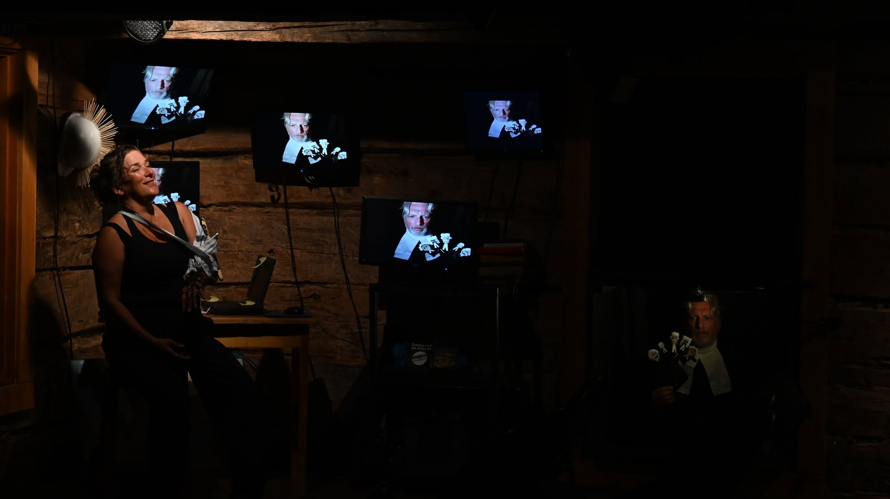
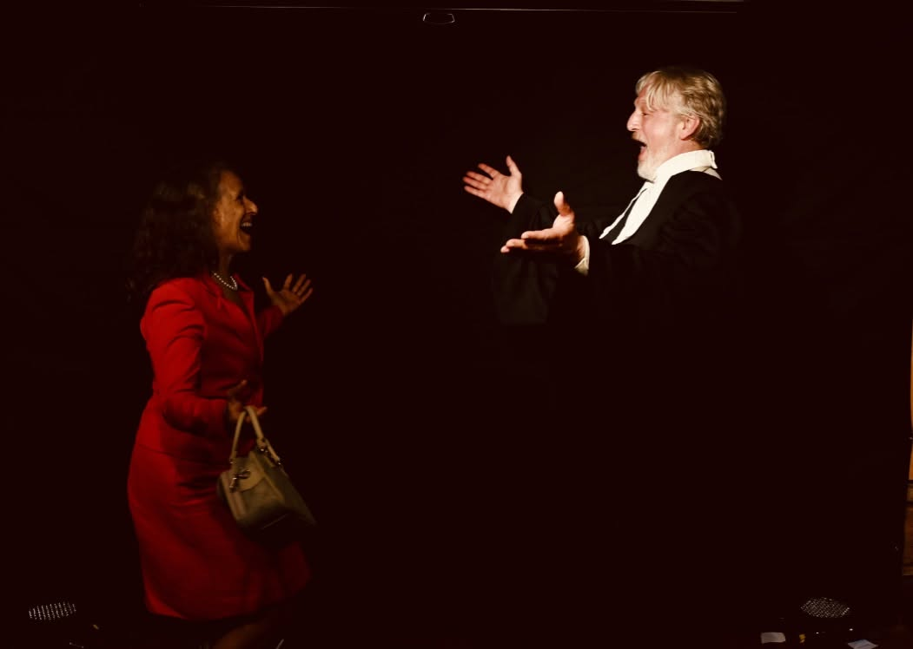
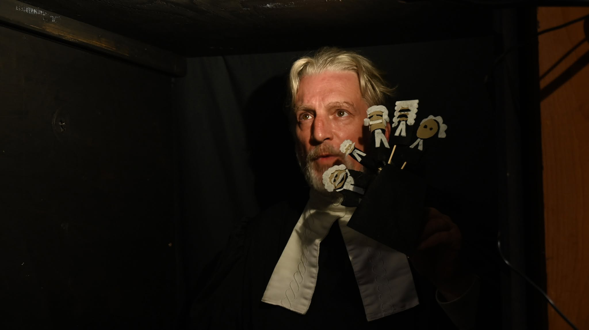

Piratages · Résidence 2026
Résidence à Maria
Retour sur la résidence à Maria
La sortie de résidence théâtrale réalisée par Cathie Belley avec des artistes de Crabe des scènes qui ont mené l'expérience de PIRATAGES à bout de bras avec le public a été un succès. Dix jours de création, d'intégration au sein de la communauté locale.
Merci à la Municipalité de Maria pour la petite auberge en bord de mer, l'espace étroit a offert une rencontre avec le public très intime et un contact direct avec chacun. On était loin de la grande scène où l’on sera en 2027, mais plusieurs éléments ont pu être testés en ce laboratoire.
Voici quelques images des comédiens de Piratages qui ont fait preuve d’initiative, de créativité, de disponibilité et de confiance pour allier le plaisir au travail de création d’une pièce à portée environnementale qui décape, avant de mettre la table convenablement.
Crédit photo : Robert Dubé



Ils rendent nos projets possibles
Merci à nos partenaires
Ce projet est rendu possible grâce à l’appui et à la collaboration de partenaires qui contribuent à faire vivre la création théâtrale dans notre région.